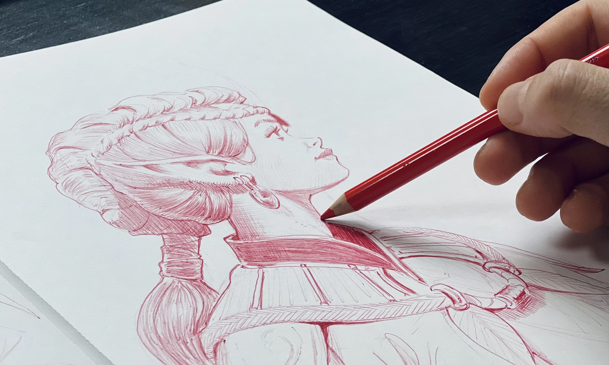

Bem-vindo ao Mundo do Desenho Artístico
O desenho é a base de toda expressão visual. Compreender os fundamentos transforma a maneira como observamos e traduzimos o mundo para o papel. Este guia foi criado para apresentar os pilares essenciais que todo desenhista precisa dominar.
Explore nossa página de princípios para aprofundar seus conhecimentos teóricos e práticos.

O início de qualquer grande obra: o primeiro traço no papel.O que você vai encontrar aqui?
Nosso espaço digital reúne conceitos fundamentais estruturados para apoiar seus estudos artísticos:
- Linha e Contorno: A fundação do traçado e da forma.
- Proporção e Anatomia: Como manter a harmonia entre os elementos.
- Luz e Sombra: O volume e a tridimensionalidade através do claro-escuro.
- Perspectiva: A ilusão de profundidade em superfícies planas.
Vá para a seção Fundamentos Detalhados para começar agora mesmo!